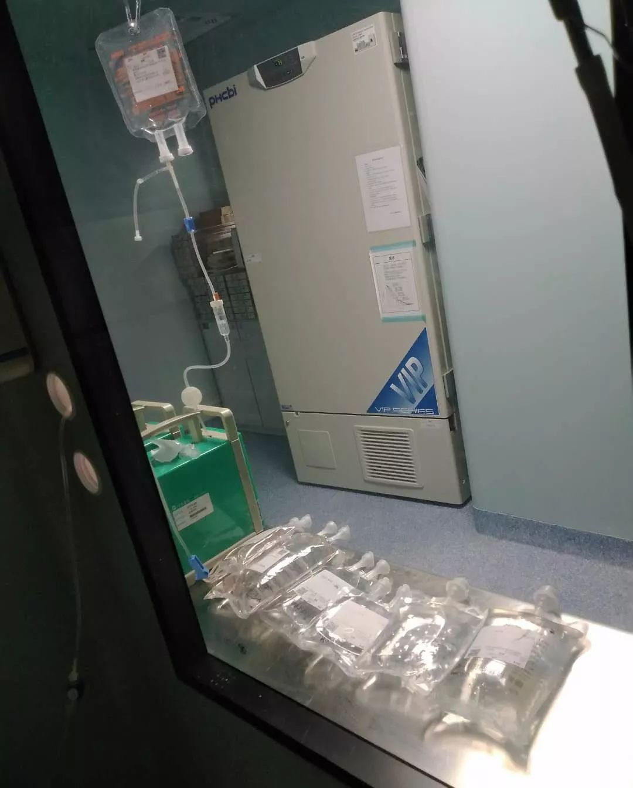

荆州第一例危重症新冠患者的生死十六天
原文链接 备份链接 ********** *****他还把手机放在枕边，循环播放歌手阿杜的《坚持到底》，像是一种隐喻和鼓励。**********仰睡会呼吸吃力，还可能因加剧咳嗽窒息昏迷，干脆全程侧卧，靠毅力去控制呼吸的节奏。***** 1 …

作者：刘倩
来源：*商业人物*（ID：*****biz-leaders）*
“我还不想死”，电话里，张希突然哭了，她觉得自己有了复发的迹象——“一种从骨头里面钻出来的疼”，就像她在确诊急性淋巴细胞白血病前一样的疼法。
生病将近一年，张希做了七次化疗，总算遏制住了癌细胞，还十分幸运地找到了配型相合的骨髓，只等春节后进仓移植。
满怀希望地回老家过了个团圆年，却被疫情带来的一系列连锁反应拖入了两难的境地，张希回不去医院，在老家又得不到有效治疗，原本一个月一次的化疗拖了近两个月还没做，她十分担心自己会复发，“如果复发了，可能就没有希望了”。
疫情的阴影下有一群白血病人，他们的常规治疗被迫中断，移植不得不暂停，还要面临缺血、断药、抢不到口罩等突发状况，在夹缝中挣扎求生。
无法进行的复诊和断了的药
赵婷自嘲是被“赶”出医院的，在她做完骨髓移植手术的第17天、出移植仓的当天。
在疫情最严重的武汉，出院是迫不得已，血液科的医生护士一部分被抽调到火神山医院，一部分去支援本院新冠肺炎患者的救治。“如果没有这场肺炎，医院是绝对不会让我直接回家的，因为移植后或多或少都会有排异反应，住院可以随时调整用药”，她对“商业人物”说。

图为赵婷拍摄于移植仓，“仓内密封，很压抑，钟表下的一个窗户，供家人探望时使用。”

“化疗过程中，每天要打十多个小时的针。”
一切都只有靠自己。赵婷每天戴着口罩躲在自己房间里，自查体温、心率，严格按照医嘱用药，还是不可避免地出现了肠胃和皮肤排异——拉肚子、脸发红、浑身无力，好在比较轻微，她只能通过微信询问她的主治医生，等待对方百忙之中的回复。
在病友群，赵婷看到过比她严重得多的排异反应，“有的身上都掉皮了，还有的便血、吃稀饭都拉肚子”。看着他们，赵婷愈发担心自己，手里的药最多只能支撑两周，一旦断药，各种排异反应就会接踵而来。
买药越来越困难，门诊停诊，定点药房只有早上十点到下午四点开门营业，很多人都是带着棉被夜里就去排队，赵婷的爸爸拿着十盒的处方，只买到了三盒。
林森前几日断药了。
他的药都放在武汉的出租屋内，带回老家的只够吃到正月十五。小年前夕离开的时候，武汉还是一片风平浪静，短短几天，却是有“家”难回了。
武汉回不去，一个月一次的例行骨穿做不了，药也断了，林森觉得十分无助，“我们好像被抛弃了，起码应该保障正常复查吧”。
“血液病人移植后是有心理压力的”，这份压力不只来自像揣着定时炸弹一样随时可能复发的疾病，还有漫长病程中花费的数十万巨款。林森已经花费了六十多万，眼看着离治愈越来越近了，他不想在最后关头功亏一篑。
身在武汉，赵婷一样无法复查，医生也无法告诉她确切的时间，只说让等消息。她身上的PICC管却是一刻也不能等，每周都要清洗换药，否则就会感染。感染，对他们这些几乎没有免疫力的血液病患者来说，意味着生命危险，而拔管同样有危险，“像我们这种才出仓几天的人是绝对不可以拔的，还没过危险期，如果复查结果不好，大剂量的打针、化疗都要通过这根管”。
谈“肺炎”色变
2月9日开始，小俊发烧37.5℃，并伴有咳嗽，11日CT显示磨玻璃样阴影，疑似新冠肺炎。
他的母亲邓春来听到后“感觉天都塌了”。小俊今年13岁，是一名急性淋巴细胞白血病患者，骨髓移植术后八个月，一直在陆道培医院定期复查。
肺部感染是白血病患者常见的并发症，却在这个谈“肺炎”色变的特殊时期，给他们带来了更大的麻烦。
有确诊资格的医院规定，只有住院才可以进行核酸检测，却不敢接收白血病患儿，而陆道培医院则要求必须首先排除新冠肺炎才可入院。邓春来带着小俊在发热门诊从早上九点等到晚上八点，始终没有等来一张床位。
邓春来认为，小俊不会是新冠肺炎，孩子已经半个月没有出过门了，他们住的燕郊至今尚未有确诊病例，但她还是忍不住担心，怕孩子因此耽误治疗。
“移植之后，肺部感染严重的话，会有生命危险”，邓春来焦虑得一夜没睡，始终守在孩子身边，“怕他呼吸突然衰竭”。
回家观察的小俊情况不好，血氧94，心率120，没精神，没胃口，没力气。三年前，就在小俊刚刚确诊白血病的时候，他也经历过一次肺部感染，在ICU里住了半个月，花了26万块钱。
移植后这大半年小俊的情况一直很平稳，邓春来本以为是苦尽甘来，没想到儿子却在这个节骨眼出现了肺感染症状。“如果不是新冠肺炎，早就能住院了，这么耽误着，心里没底”，邓春来也在盘算手里的钱，多耽误一天，肺炎就难治一分，费用也会更多。
小俊生病以来，已经花费了100多万，邓春来因此背上了数十万元的债务，这些都要她独自承担。她手里只剩下3万块钱，“如果感染严重了肯定不够”，还有8万多元的报销款，因为疫情的原因不能及时结算，无疑是雪上加霜。
邓春来甚至想到了最坏的结果，“孩子万一有个三长两短，连老家都回不去”，说到这，她忍不住哭了出来，“不知道自己还能撑多久”。
移植被迫中断
移植计划戛然而止。吴悠最后的机会也变得渺茫。
生病的三年间，吴悠辗转看过许多医生，几乎都被判了“死刑”。这段时间，她一直在低烧，却查不出原因，只能依靠药物和输血压制着，医生说最好的办法就是尽快移植。
正月初六，是原定的进仓日，吴悠很幸运，在中华骨髓库找到了两位配型全相合的供者，父亲吴凡作为他们的备份，准备好了人，也准备好了钱。
得知女儿可以做骨髓移植手术，并且医生估计有七八成把握的时候，吴凡觉得像是有人给他打了一剂强心针。他卖了老家襄阳唯一的房产，计划用这笔21万的卖房钱加上从信用卡里借出的十几万元，让女儿先进仓，剩下的再去借高利贷，“我一直没有想过放弃，就算砸锅卖铁也要治”。
疫情打乱了所有的计划。两位供者无法去医院完成身体检查，移植被迫中断，吴凡想把自己的骨髓捐给女儿，却被告知血源不足，进仓风险太大，只能继续维持，但很快吴悠连日常治疗用血都输不上了。
寒暑假期间，献血主力军学生放假回家带来了“季节性血荒”，疫情爆发后，很多繁华商圈的流动献血点关闭，进一步加剧了“血荒”。
对于每周都要输一次血，每隔四五天就要输一次血小板的吴悠来说，输不上血是致命的。她变得极度虚弱，头晕、心慌、躺在床上不能起身，拉着大夫的手哀求，“我太难受了，你帮我输血吧”。
吴悠是个乐观的姑娘，在父亲眼中“求生欲强，心态好”，这次没法做移植，又输不上血，她显得很失望，说了好几次“不治了，我们回家吧”。
“她也知道家里实在没钱了”，吴凡不知道他还能去哪筹钱——唯一的房产已变卖，亲戚朋友早已借遍，信用卡即将逾期，想去借高利贷却因为交通管制寸步难行。移植遥遥无期，每日的花费至少5000元，欠费就会被停药，这样的日子吴凡不知道什么时候才会结束，他也不知道该去怪谁，“天灾人祸，只能说我们赶上的时候不好”。
作为父亲，吴凡没有办法眼睁睁看着女儿在有很大希望治愈的时候放弃，他更没有办法接受，假如女儿的生命即将走到尽头，这个原因不是病情的恶化，而是不得不中断的治疗。
好消息和坏消息
采访结束的两天后，我陆续收到了他们最新的消息。
张希顺利回到了医院所在地，再隔离14天，她就可以开始第八次化疗，医生说她的症状不像是复发。
林森从药贩子手里买的药，通过顺丰快递寄到了河南老家，他还在县医院化验了血常规，一切正常。
小俊在当地卫计委的协调下于12日晚被定点医院收治，之后两次核酸检验均为阴性，排除了新冠肺炎感染，15日转入陆道培医院进行下一步治疗。
吴悠输了一次血，精神好了很多，吴凡东拼西凑了几千块钱，赶在停药之前充进了治疗费中，他们还在等待可以进仓移植的那天。
赵婷带来了一个坏消息。
她的PICC管无法继续维护，14日拔除了。在病友不断拨打市长热线的要求下，每周四、五临时开放的PICC维护门诊，只持续了两周，下周或将再次关闭，直到疫情结束。赵婷在群里挨个通知还未拔管的病友，至于未来，她说走一步看一步吧，“2020年的愿望，活着就好”。
（文中出现均为化名）
*文中图片为受访者提供

推荐阅读


严正声明：“商业人物”所有原创文章，转载均须获授权。一切形式非法转载，包括但不限于盗转、未获“商业人物”授权通过第三方转载行为，均属侵权行为，“商业人物”将公布“黑名单”并追究法律责任。“商业人物”只愿与尊重知识产权的机构合作。
投稿、约访、合作，联系邮箱：bizleaders@qq.com
添加微信biz-leader，获转载授权或邀您加入商友群
1.长按右侧二维码即可关注***。*
2.期待您置顶与星标。欢迎分享与评论，欢迎通过留言或私信方式给我们提供选题线索。
3.点击“阅读原文”，看商业人物官网，获取更多精彩内容。**

原文链接 备份链接 ********** *****他还把手机放在枕边，循环播放歌手阿杜的《坚持到底》，像是一种隐喻和鼓励。**********仰睡会呼吸吃力，还可能因加剧咳嗽窒息昏迷，干脆全程侧卧，靠毅力去控制呼吸的节奏。***** 1 …
原文链接 备份链接 澎湃新闻记者 赵思维 发自武汉 实习生 夏梦洁 从1月23日21时许发出第一条求助微博，25岁的新冠肺炎痊愈者武康发布了50余条微博，粉丝从1000涨至现在的179万粉丝。 这些微博记录了他从发病住不进院的无助、被病魔 …
原文链接 备份链接 写日记不仅能够记录工作，还成为她自我解压的好办法。 文 | 黄 祺 袁蕙芸 年初一晚上，上海交大医学院附属仁济医院查琼芳医生，在武汉的宾馆房间里写下了第一篇“战地日记”。 从小年夜（1月23日）接到出发通知，到除夕夜出 …
原文链接 备份链接 【财新网】（实习记者 何京蔚 记者 黄蕙昭）北京时间2月14日，加拿大安大略省卫生厅召开新闻发布会，通报当地新型冠状病毒肺炎疫情。发言人芭芭拉·亚菲(Babara Yaffe)表示，多伦多市确诊的两例新冠肺炎患者，临 …
原文链接 备份链接 澎湃新闻记者 张若婷 贺梨萍 新冠肺炎疫情暴发以来，各国科研团队对其飞沫、接触、气溶胶等传播途径高度关注， “能否感染结膜”也一度引发热议。当地时间2月11日，武汉大学人民医院陈长征研究组于预印本网站medRxiv（未 …